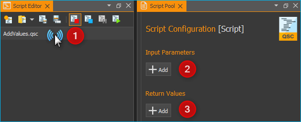

4. Script-System
4.1. Einführung
Achtung
Mit dem CETONI Elements Script-System können Sie Prozesse steuern und automatisieren. Überprüfen Sie die erstellten Skripte/Programme sowie die Parametereinträge, bevor Sie sie zum ersten Mal ausführen! CETONI übernimmt keine Haftung für direkte und/oder indirekte Schäden an Ihrem System oder externen Hard- und Softwarekomponenten, die durch die von Ihnen erstellten Skripte/Programme oder durch die Eingabe von Parametern die für Ihren speziellen Anwendungsfall nicht geeignet oder ungünstig sind.
Die Software verfügt über ein leistungsfähiges Script-System, um Prozessabläufe zu automatisieren.

Die Benutzeroberfläche des Skriptsystems besteht aus zwei einzelnen Ansichten:
Script Editor- enthält das vom Anwender programmierte Script (siehe Views).
Script Pool - enthält alle verfügbaren Scriptfunktionen.
Script-Konfiguration - dient zur Konfiguration der Parameter einer Scriptfunktion, die im Scripteditor ausgewählt ist
4.2. Script Pool
4.2.1. Überblick
Um den Script Pool einzublenden, aktivieren Sie auf der Seitenleiste die Schaltfläche Scripting.

Zusammen mit dem Script Pool wird auch der Bereich zur Script-Konfiguration eingeblendet. Der Script Pool enthält alle Scriptfunktionen, die für die Programmierung von Scripten zur Verfügung stehen. Die Scriptfunktionen sind dabei nach Kategorien unterteilt. Jedes Gerät bzw. jedes Plugin registriert seine Scriptfunktionen in einer eigenen Kategorie. Die Kategorien können vom Anwender jederzeit im Script Pool ein- und ausgeklappt werden.

Zum Ein-❶ & Ausklappen ❷ der Funktionen einer Kategorie, klicken Sie einfach auf den Kategorienamen (Abbildung oben).
4.2.2. Script Pool Kontextmenü
Öffnen Sie das Kontextmenü, indem Sie mit der rechten Maustaste auf den Skript-Pool klicken:
|
Öffnet die ausgewählte Funktion User Library zur Bearbeitung. |
|
Öffnet den Ordner Benutzerbibliothek im Datei-Explorer |
|
Erweitert alle Kategorien |
|
Klappt alle Kategorien zusammen |
4.3. Script Editor
4.3.1. Einführung
Der Script Editor dient zur grafischen Programmierung von Scripten/Programmen. In der unteren Abbildung (Script Editor) sind folgende Elemente des Arbeitsfensters nummeriert:
Werkzeugleiste - zum Laden, Speichern und zur Ablaufsteuerung von Scripten.
Die Kopfzeile enthält den Dateinamen des aktuell geöffneten Scriptprogramms.
Funktionsbaum - baumartige Struktur mit allen Scriptfunktionen
Die aktuell ausgeführte Funktion wird farblich hervorgehoben (hier blau)
Wenn Sie eine Funktion durch Anklicken auswählen, wird diese mit der Akzentfarbe das aktuellen Themes farblich markiert (hier orange).

Jede Funktion wird im Funktionsbaum in einer eigenen Zeile angezeigt. In dieser Zeile sind alle wichtigen Parameter der Funktion für Sie sichtbar (siehe Abbildung unten):

Auf der linken Seite finden Sie das grafische Symbol der Funktion ❶. Unmittelbar rechts neben dem Symbol oben ❷ finden Sie den Funktionsnamen. Neben dem Funktionsnamen werden Ihnen Statusinformationen ❸ angezeigt. Diese Informationen sind bei vielen Funktionen erst während der Ausführung sichtbar und können sich währende der Ausführung auch ändern. Direkt unter dem Funktionsnamen sehen eine Zusammenfassung aller wichtigen Funktionsparameter ❹, die im Konfigurationsbereich von Ihnen konfiguriert wurden.
Der Script Editor ist in der Software ein bewegliches andockbares Fenster. D.h., Sie können den Editor durch Anklicken der Titelleiste und anschließendes Ziehen mit der Maus an eine andere Position innerhalb der Software verschieben und an beliebiger Stelle wieder andocken. Sollte das Fenster des Editor einmal nicht sichtbar sein, dann aktivieren Sie es über den Menüpunkt im Hauptmenü (siehe Abbildung unten).

Um die Übersichtlichkeit zu erhöhen oder die Darstellung des Editors an Ihre Bedürfnisse anzupassen, können Sie die Skalierung ändern Klicken Sie dafür mit der rechten Maustaste in den Editor um das Kontextmenü zu öffnen und wählen Sie in dem Untermenü Set Item Scaling die Größe der Darstellung aus:

Die folgenden Größen sind auswählbar:
Small – sehr kompakte Darstellung für maximale Übersichtlichkeit bei komplexen Funktionsabläufen, die Funktionsparameter werden nicht mehr mit angezeigt
Normal – normale Darstellung
Big – die Icons und der Funktionsname werden vergrößert dargestellt für eine optimale Lesbarkeit
4.3.2. Werkzeugleiste
|
Erzeugt ein neues, leeres Script. |
|
Lädt eine vorhandene Script-Datei in den Script Editor. |
|
Speichert das aktuelle Script. |
|
Speichert das aktuelle Script unter einem neuen Namen. |
|
Beendet die Scriptausführung sofort. Alle Geräte bleiben im aktuellen Zustand, sie werden nicht abgeschaltet oder gestoppt und gehen nicht in einen sicheren Zustand über. Durch Anklicken der Start-Schaltfläche beginnt der Programmablauf komplett von vorne. |
|
Script Stopp Anfordern. Beim Klick auf diese Schaltfläche wird die globale Scriptvariable $StopRequested auf den Wert true gesetzt. Das Script kann diese Variable zyklisch abfragen, z.B. in der Hauptschleife des Scriptes, um auf eine Stopp-Anforderung zu reagieren und das Script zu beenden. Dadurch hat das Script die Möglichkeit, Geräte in einen sicheren Zustand zu bringen (z.B. Pumpen zu stoppen, Ventile zu schalten) bevor die Scriptausführung beendet wird. |
|
Unterbricht die aktuelle Programmausführung - durch Anklicken der Start-Schaltfläche wird die Ausführung an der aktuellen Position fortgesetzt . |
|
Startet die Programmausführung oder setzt ein Programm nach einer Unterbrechung fort. |
|
Aktiviert den Einzelschrittbetrieb zum Testen und Debuggen von Scriptprogrammen. Ist diese Funktion aktiv wird die Scriptausführung nach der Ausführung jeder Scriptfunktion unterbrochen. |
|
Durch Klicken dieser Schaltfläche kann der nächste Schritt, d.h. die nächste Funktion im Einzelschrittbetrieb ausgeführt. |
|
Scroll Lock - verhindert, das der Script Editor bei der Ausführung einer Funktion automatisch zu dieser Funktion scrollt |
|
Klappt alle Funktionen im Script auf |
|
Klappt alle Funktionen im Script ein so dass nur noch die oberste Funktionsebene zu sehen ist |
Tipp
Sie können Scripte auch einfach per Drag & Drop (Ziehen und Ablegen) laden. Ziehen Sie dafür einfach eine Script-Datei aus Ihrem Dateisystem auf den Script-Editor.
4.3.3. Kontextmenü
Wenn Sie mit der rechten Maustaste auf eine Funktion im Script-Editor klicken, wird ein Kontextmenü mit zusätzlichen Aktionen eingeblendet (siehe Abbildung unten).

Die folgenden Funktionen stehen über das Kontextmenü zu Verfügung:
|
Öffnet den ausgewählten Skriptfunktionsaufruf zur Bearbeitung (nur bei Rechtsklick auf einen Skriptfunktionsaufruf) |
|
Verschiebt die ausgewählte Funktion um eine Position nach oben |
|
Verschiebt die ausgewählte Funktion um eine Position nach unten |
|
Kopiert die ausgewählten Funktionen in die Zwischenablage |
|
Fügt die Funktionen aus der Zwischenablage vor die ausgewählte Funktion ein |
|
Dupliziert die ausgewählte Funktion. Dies ist eine Kombination aus Kopieren und Einfügen in einem einzigen Schritt. |
|
Löscht die ausgewählten Funktionen |
|
Löscht alle Funktionen im Script |
|
Ersetzt die ausgewählten Funktionen durch eine Funktionssequenz und fügt die Funktionen in die Sequenz ein. Damit können Sie schnell Funktionen gruppieren und so ihr Script strukturieren und übersichtlicher gestalten. |
|
Aktiviert / Deaktiviert die ausgewählten Funktionen. Damit können Sie bestimmt Funktionen temporär deaktivieren und später wieder aktivieren. Deaktivierte Funktionen werden bei der Programmausführung übersprungen. Dies entspricht der Funktionalität des Auskommentierens von Quelltext in textbasierten Programmiersprachen. |
|
Klappt alle Funktionen im Script auf |
|
Klappt alle Funktionen im Script ein so dass nur noch die oberste Funktionsebene zu sehen ist |
|
Ändert die Skalierung der Darstellung der Scriptfunktionen. Damit kann die Übersichtlichkeit bei komplexen Scripten erhöht werden. |
|
Startet die Scriptausführung an der ausgewählten Funktion. Wenn Variablen im Script vorher initialisiert werden, kann es sein, dass sie in diesem Fall noch nicht initialisiert sind. |
|
Beendet die Scriptausführung sofort. Alle Geräte bleiben im aktuellen Zustand, sie werden nicht abgeschaltet oder gestoppt und gehen nicht in einen sicheren Zustand über. |
|
Aktiviert / deaktiviert den Debug Modus.
Setzt den Wert der globalen Script Variable
|
Tipp
Um die Ausführung des Skriptes von einer bestimmten Funktion aus zu starten, klicken Sie mit der rechten Maustaste auf die Funktion und wählen Sie dann im Kontextmenü den Punkt .
4.4. Script Konfigurationsbereich
4.4.1. Übersicht
Der Konfigurationsbereich enthält alle Bedienelemente zur Konfiguration der Scriptfunktion, die aktuell im Script Editor ausgewählt ist.

Der Konfigurationsbereich besteht aus:
Kopfzeile mit der Bezeichnung der aktuell ausgewählten Funktion
Eingabe- und Bedienelemente der Funktion
Kommentarfeld zur Eingabe eines beliebigen Kommentars
Die Eingabe- und Bedienelemente ❷ sind für jede Script-Funktion unterschiedlich. Alle Funktionen haben aber einige Einstellungen gemeinsam, wie z.B das Kommentarfeld im unteren Teil des Konfigurationsbereiches ❸ oder der Funktionsname im Kopf ❶.
4.4.2. Funktionsbezeichnung ändern
Sie können im Kopf des Konfigurationsbereiches die Bezeichnung der Funktion ändern, um so „sprechende“ Funktionsbezeichnungen zu verwenden, die Dritten oder Ihnen später das Lesen und Verstehen des Skriptes erleichtern.
Um die Funktionsbezeichnung zu ändern, klicken Sie entweder mit der linken Maustaste auf den Funktionsnamen im Kopf der Funktion oder klicken Sie den Namen mit der rechten Maustaste an und wählen Sie im Kontextmenü den Punkt (siehe Abbildung unten).

In dem Eingabedialog der nun angezeigt wird, geben Sie eine neue Bezeichnung für die Funktion ein.

Das folgende Beispiel zeigt ein kurzes Programm mit den Standardfunktionsnamen auf der linken Seite und das gleiche Programm mit eigenen Funktionsnamen auf der rechten Seite.
Standard Funktionsnamen |
Anwendungsspezifische Namen |
|
|


Tipp
Verbessern Sie die Lesbarkeit, Verständlichkeit und die Wartbarkeit Ihrer Skripte durch die Verwendung von sprechenden, anwendungsspezifischen Funktionsbezeichnungen.
4.4.3. Kommentar eingeben
Im Kommentarfeld können Sie einen beliebigen Kommentar eingeben, der es anderen Anwendern ermöglicht, Ihr Script besser zu verstehen und dem Programmablauf leichter zu folgen.

Wenn Sie im Script Editor den Mauspfeil über eine Funktion bewegen, wird Ihnen der entsprechende Kommentar dieser Funktion in einem Hinweisfenster (Tooltip) eingeblendet (siehe Abbildung oben). So können Sie, ohne dass Sie den Konfigurationsbereich einer Funktion öffnen müssen, den Kommentar zu dieser Funktion lesen.
4.4.4. Script Eingabefelder
In vielen Scriptfunktionen sehen Sie im Konfigurationsbereich spezielle Eingabefelder, die mit einem farbigen V gekennzeichnet sind:

Diese speziellen Eingabefelder ermöglichen Ihnen:
die Eingabe von Werten (z.B. 0.23 oder -24)
die Verwendung von Script Variablen (z.B.
$TargetFlowoder$Voltage)die Verwendung von Device Properties (z.B.
$$Nemesys_M_1.ActualFlow)die Nutzung von Inline-JavaScript (z.B.
${ $$Nemesys_M_1.ActualFlow * 2 })
Script Variablen einfügen
Um Script-Variablen zu verwenden, müssen Sie im Eingabefeld lediglich ein
Dollar-Zeichen $ eingeben. Dann wird Ihnen sofort eine Auswahlliste
von Variablen angezeigt, die an der aktuellen Position im Script verfügbar
sind. Sie können einfach eine Variable aus der Liste wählen oder den Namen
weiter von Hand eintippen:

Der Wert der Variable wird dann zur Laufzeit für den entsprechenden Parameter
verwendet. In dem Beispiel oben, wird zur Laufzeit der Wert der Variablen
$TargetVolume für den Script Parameter Volume verwendet.
Device Properties einfügen
Um Device Properties einzufügen, klicken Sie einfach mit der rechten Maustaste in das Eingabefeld und wählen dann den Menüpunkt :

Wählen Sie dann die Geräteeigenschaft in dem angezeigten Dialog aus. Der Bezeichner für die Geräteeingenschaft wird dann in das Eingabefeld eingefügt.

Zur Laufzeit wird dann der Wert der Geräteeigenschaft gelesen und and das
Script übergeben. Im Beispiel oben, wird die aktuelle Flussrate der Pumpe
Cedosys 2 verwendet ($$Cedosys_2.ActualFlow) um die Flussrate der
Pumpe Cedosys 1 zu setzen.
Inline-JavaScript verwenden
Sie können in den speziellen Eingabefeldern sogar Inline-JavaScript verwenden. D.h. für kurze, einzeilige Berechnungen, kann JavaScript Code direkt in das Eingabefeld geschrieben werden. Inline JavaScript Code beginnen Sie immer mit einem Dollarzeichen gefolgt von einer öffnenden, geschweiften Klammer. Abgeschlossen wird der Code durch eine schließende, geschweifte Klamme:
${ /* inline code */ }
Im folgenden Beispiel soll die Flussrate für die Pumpe Nemesys S 1 auf Basis
des analogen Eingangssignals des Kanals $$Nemesys_S_1_AnIN berechnet
werden. Dafür soll das analoge Eingangssignal um den Faktor 0.1
skaliert werden:

Wichtig
Verwenden Sie Inline-JavaScript nur für sehr einfache Berechnungen, wie z.B. Skalierungen. Für komplexere Berechnungen oder logische Vergleiche sollten Sie die entsprechende JavaScript Funktion oder die Set Variable Funktion verwenden.
Variablen mit Geräte Handles einfügen
Geräte Handles sind Geräte Bezeichner, die mit zwei Dollarzeichen beginnen und
ein Gerät eindeutig identifizieren. Ein Geräte Handle ist z.B. $$Nemesys_M_1.
Device Properties bestehen immer aus
einem Geräte Handle und einem Bezeichner für die entsprechende Eigenschaft
(Property) des Gerätes. So besteht z.B. das Device Property $$Nemesys_S_1_AnIN1.ActualValue
aus dem Geräte Handle $$Nemesys_S_1_AnIN1 und der Eigenschaft
ActualValue. D.h., wenn Sie ein Device Property kennen, dann kennen
Sie auch das entsprechende Geräte Handle.
In normalen Eingabefeldern werden Geräte Handles gewöhnlich nicht verwendet. Allerdings haben viele gerätespezifischen Scriptfunktionen ein Auswahlfeld zur Auswahl des Gerätes, für das ein Befehl ausgeführt werden soll. Ist dieses Auswahlfeld mit einem farbigen V gekennzeichnet, dann können Sie dort auch Variablen übergeben, die ein Geräte Handle enthalten.

Im Beispiel oben wird an das Auswahlfeld zur Auswahl der Pumpe die Variable
$PumpDevice übergeben, welche das Geräte Handle für die Pumpe enthält,
für die ein Dosiervorgang gestartet werden soll.
4.5. Programmierung
4.5.1. Funktionen hinzufügen
Funktionen werden aus dem Script-Pool mit Ziehen-und-Ablegen (Drag & Drop) in den Script Editor übernommen. Dazu gehen Sie wie folgt vor:
Klicken Sie mit der linken Maustaste im Script-Pool auf die Funktion, die Sie einfügen möchten ❶ und halten Sie die Maus gedrückt.
Ziehen Sie die Funktion mit gedrückter Maustaste in den Script Editor hinein.
Sobald Sie die linke Maustaste loslassen ❷, wird die Funktion in den Script- Editor an der entsprechenden Stelle eingefügt.

An welche Stelle die Funktion eingefügt wird, hängt davon ab, an welcher Position sich der Mauszeiger befindet, wenn Sie die Maustaste loslassen. Folgende Varianten sind möglich:

Lassen Sie die Maustaste über einer Funktion los, so wird die neue Funktion vor die Funktion eingefügt.
Wird die Maustaste über einer Funktionssequenz (z.B., einer Schleife/Loop) losgelassen, dann wird die neue Funktion am Ende der Sequenz angefügt.
Wenn über dem freien Bereich am Ende des Funktionsbaumes die Maustaste losgelassen wird, dann wird die Funktion an das Ende angehängt.
4.5.2. Funktionen auswählen
Um Funktionen zu bewegen, zu kopieren oder zu löschen, müssen Sie die Funktionen zuerst auswählen. Sie können entweder eine einzelne Funktion durch Anklicken auswählen, oder eine zusammenhängende Folge von Funktionen auf der gleichen Hierarchieebene.

Sobald Sie eine Funktion mit der linken Maustaste anklicken wird die aktuelle Auswahl gelöscht und die neue Funktion ausgewählt ❶. Wenn Sie jedoch die Umschalttaste (Shift) drücken, während Sie auf ein Element klicken ❷, werden alle Elemente zwischen dem aktuellen Element und dem angeklickten Element ausgewählt.
4.5.3. Funktionen bewegen
Durch Ziehen-und-Ablegen können Sie die Funktionen im Funktionsbaum bewegen und so an eine neue Position verschieben. Für das Einfügen an der neuen Position gelten dieselben Regeln wie beim Hinzufügen von neuen Funktionen.

Für das Verschieben von Funktionen nach Oben und Unten gibt es eine weitere Alternative. Klicken Sie hierfür mit der rechten Maustaste auf die Funktion, die verschoben werden soll. Aus dem Kontextmenü (siehe Abbildung unten) wählen Sie dann den Menüpunkt Move up oder Move down. Alternativ können Sie auch die Tastenkombinationen Strg + ↑ oder Strg + ↓ verwenden.
Mit dieser zweiten Methode lassen sich Funktionen nur in der aktuellen Sequenz noch oben oder unten verschieben. Wollen Sie die Funktion an eine komplett andere Position im Funktionsbaum bewegen, so ist dies nur mit Ziehen-und Ablegen-möglich.
Wichtig
Mit Move up oder Move down wird immer nur die aktuelle Funktion verschoben. Auch wenn mehrere Funktionen ausgewählt sind, wird nur die aktuelle Funktion verschoben. Wenn Sie die komplette Auswahl verschieben möchten, können Sie dies durch Ziehen-und-Ablegen (Drag & Drop) erreichen.
4.5.4. Funktionen löschen
Für das Löschen von Funktionen gibt es zwei Möglichkeiten:
Wählen Sie die zu löschenden Funktionen aus und klicken Sie dann im Kontextmenü auf den Menüpunkt Delete.
Wählen Sie die zu löschenden Funktionen aus und drücken Sie dann die Entfernen Taste.
4.5.5. Funktionen kopieren
Das Kopieren von Funktionen kann auch wieder wahlweise über das Kontextmenü oder mittels Tastenkombinationen erfolgen. Wenn Sie mit dem Kontextmenü arbeiten, wählen Sie nacheinander die Menüpunkte Copy und Paste (Abbildung unten). Wenn Sie mit der Tastatur arbeiten, verwenden Sie die Tastenkombinationen Strg + C zum Kopieren und Strg + V zum Einfügen.

So kopieren Sie eine Funktion:
Wählen Sie die Funktionen, die Sie kopieren möchten, durch Anklicken aus.
Kopieren Sie die Funktionen mit dem Menüpunkt Copy aus dem Kontextmenü oder über die Tastenkombination Strg + C.
Wählen Sie die Funktion, vor die Sie die kopierten Funktionen einfügen möchten, durch Anklicken aus.
Fügen Sie die kopierten Funktionen mit dem Menüpunkt Paste oder der Tastenkombination Strg + V ein.
Den Einfügevorgang Paste können Sie beliebig oft wiederholen, um mehrere Kopien der vorher mit Copy kopierten Funktionen aus der Zwischenablage einzufügen.
Tipp
Zum schnellen Duplizieren von Funktionen können Sie auch den Menüpunkt oder die Tastenkombination Strg + D verwenden.
4.5.6. Funktionen gruppieren
Um die Übersichtlichkeit und Lesbarkeit Ihres Scripts zu verbessern, können Sie Abfolgen von Funktionen schnell und einfach in Funktionssequenzen gruppieren. Wählen Sie dafür einfach eine zusammenhängende Reihe von Funktionen aus, und klicken Sie dann im Kontextmenü auf den Menüpunkt Convert Selection To Function Sequence.

Die ausgewählten Funktionen werden nun durch eine Funktionssequenz ersetzt, welche die ausgewählten Funktionen enthält.

4.5.7. Funktionen deaktivieren / aktivieren
In klassischen textbasierten Programmiersprachen gibt es die Möglichkeit, Quelltext durch Auskommentieren temporär zu deaktivieren. Das Script-System bietet eine vergleichbare Funktionalität. Um Funktionen zu deaktivieren, markieren Sie die Funktionen im Script-Editor und wählen dann aus dem Kontextmenü den Eintrag . Alternativ können Sie auch die Tastenkombination Strg + / verwenden.

Wenn Sie Funktionen deaktivieren, werden diese in eine Disabled Functions Sequenz eingefügt. Bei der Skriptausführung, wird der Inhalt der Sequenz einfach übersprungen.

Um deaktivierte Funktionen wieder zu aktivieren, wählen Sie eine einzelne Disabled Functions Sequenz aus, und verwenden dann den gleichen Menüpunkt / Tastenkombination wie beim Deaktivieren.
4.5.8. Funktionsparameter editieren
Sobald Sie eine Funktion im Funktionsbaum durch Anklicken auswählen, werden im Bereich Script-Konfiguration die Bedienelemente zur Konfiguration der gewählten Funktion eingeblendet und Sie können die Funktionsparameter editieren.
4.5.9. Tooltip anzeigen
Wenn Sie die Maus über eine Funktion bewegen, wird nach kurzer Zeit das Hinweisfenster (Tooltip) für diese Funktion angezeigt (siehe Abbildung unten). In diesem Fenster erhalten Sie alle Informationen zu dieser Funktion auf einem Blick: Funktionsname ❶, Kommentar oder Funktionsbeschreibung ❷ und Funktionsparameter ❸.

4.6. Variablen
4.6.1. Einführung
Das Script-System unterstützt die Verwendung von Variablen. Variablen sind in Scriptprogrammen Behälter für Rechengrößen und Werte, die im Verlauf der Scriptausführung auftreten. Variablen werden durch einen vom Benutzer zu definierenden Namen bezeichnet. Variablen können verwendet werden, um Werte (z.B., Schleifenzähler oder von Sensoren gemeldete Daten) darin zu speichern oder Ergebnisse von Berechnungen. Scriptfunktionen, die die Verwendung von Variablen unterstützen, können dann später auf den Inhalt dieser Variablen zugreifen.
4.6.2. Variablen anlegen
Bevor im Script Variablen zum Speichern von Werten oder zum Rechnen verwendet werden können, müssen die Variablen angelegt werden. Es gibt zwei Varianten zum Anlegen von Variablen:
Explizit: Variablen werden explizit vom Anwender definiert, z.B. durch die Funktion Create Variable.
Implizit: Das Anlegen erfolgt implizit über Funktionen, die Variablen anbieten, wie z.B. durch die Funktion Counting Loop, deren Schleifenzähler eine Variable ist.
4.6.3. Benennung von Variablen
Bezüglich der Namensgebung für Variablen sind einige Besonderheiten zu
beachten: Jede Variable wird im Programm über einen weitgehend frei
wählbaren Namen angesprochen. Dieser Name identifiziert die Variable
eindeutig. Verschiedene Namen bezeichnen verschiedene Variablen. Durch
ein vorangestelltes $-Symbol können Variablennamen oder die Verwendung
von Variablen eindeutig visuell identifiziert werden. Das Scriptsystem
unterscheidet zwischen Groß- und Kleinschreibung: der Name $Var
benennt also ein andere Variable als der Name $var.
Für die Benennung von Variablen gelten außerdem folgende Vorgaben:
Variablennamen müssen immer mit einem Dollarzeichen ($) beginnen und dürfen kein weiteres Dollarzeichen beinhalten.
Variablennamen dürfen nur Buchstaben und Ziffern enthalten (a-Z, 0-9).
Sonderzeichen (z.B., $, &, /, -, …) dürfen nicht verwendet werden.
Variablennamen dürfen nicht mit einer Ziffer beginnen.
Tipp
Sie können den Inhalt von Variablen mit Hilfe der Show Message Funktion anzeigen lassen, um so z.B. die Ergebnisse von Berechnungen zu überprüfen.
4.6.4. Sichtbarkeitsbereich von Variablen (Scope)
Unter dem Sichtbarkeitsbereich einer Variable versteht man den Programmabschnitt, in dem die Variable nutzbar und sichtbar ist. Die Qmix Scripte haben im Scripteditor eine baumartige Struktur mit beliebig vielen Ebenen. Eine Variable ist stets nur auf der Ebene sichtbar, auf der Sie erstellt wurde und auf allen tieferen Ebenen.
Im folgenden Beispielprogramm ist die Variable $a im rot markierten
Bereich sichtbar – d.h. von Scriptfunktionen verwendbar (Abbildungen
unten):

Die Variable $b dagegen ist nur in der Funktionssequenz
(FunctionSequence) sichtbar (Abbildung unten).
Der Zähler $i der Zählschleife ist nur in den Funktionen sichtbar, die
sich in der Zählschleife (Counting Loop) befinden:

Die Variable $c, die innerhalb der Zählschleife erstellt
wird, ist auch nur auf dieser Ebene sichtbar, da keine weiteren
untergeordneten Ebenen mehr vorhanden sind:

Zu beachten ist außerdem, dass eine später (d.h., auf einer
tieferen Ebene) definierte Variable eine früher (d.h., vorher, auf einer
höheren Ebene) definierte Variable gleichen Namens überschreibt: wäre
$c z.B. wiederholt als $b definiert worden, würde der später
zugeordnete Wert (also 2) den vorhergehenden (also 1) überschreiben.
Wichtig
Wenn Sie Variablen in tieferen Ebenen den gleichen Namen geben, wie Variablen in höheren Ebenen, dann überdecken die Variablen in der tieferen Ebene die Variablen der höheren Ebene. D.h., Funktionen in der tieferen Ebene können nicht mehr auf die Variable der höheren Ebene (bzw. deren Werte) zugreifen.
4.6.5. Verwendung von Variablen
Variablen können in allen Funktionen, die diese unterstützen, verwendet werden (z.B. Create Variable Funktion). Über den Variablennamen inklusive Dollarzeichen (z.B. $TargetPosition) kann im Script auf eine Variable lesend oder schreibend zugegriffen werden.
Wichtig
Variablen haben erst einen gültigen Wert, wenn die Zuweisungsfunktion (z.B. Create Variable) durchlaufen wurde. Wenn Sie die Aktion Run From Here verwenden, kann es deshalb vorkommen, dass Variablen keine gültigen Werte enthalten, da Sie die Zuweisungsfunktion übersprungen haben.
Bei Funktionen, die die Verwendung von Variablen unterstützen, sind die entsprechenden Eingabefelder durch ein farbiges V markiert (siehe Abbildung unten). Sie können dann, alternativ zu einem Wert, den Bezeichner einer Variable eintragen, um deren Wert in Ihrem Script zu verwenden.

Tipp
In fast allen Eingabefeldern, welche die Verwendung von Variablen unterstützen können Sie auch direkt über Prozessdatenbezeichner auf Geräteprozessdaten zugreifen (siehe Device Properties (Prozessdaten)).
4.6.6. Autovervollständigung von Variablennamen
Eingabefelder, die die Verwendung von Variablen unterstützen, bieten eine Autovervollständigung, die Sie bei der Auswahl und Eingabe gültiger Variablennamen unterstützt.

Sobald Sie in diesen Eingabefeldern das Dollarzeichen ($) eingeben, um einen Variablennamen einzutragen, wird eine Liste der bereits erstellten Variablen eingeblendet (siehe Abbildung oben).
Mit jedem weiteren Buchstaben den Sie dann eingeben, wird die Liste der Variablen erneut gefiltert und an den bisherigen Inhalt des Feldes angepasst. Mit den ↑- oder ↓-Tasten oder mit der Maus können Sie einen Eintrag aus der Liste wählen und mit der Enter Taste die Auswahl in das Eingabefeld übernehmen.
4.7. Device Properties (Prozessdaten)
In fast allen Eingabefeldern, welche die Verwendung von Variablen unterstützen (siehe Verwendung von Variablen), können Sie auf Prozessdaten (Device Properties) von Geräten auch direkt zugreifen. Klicken Sie dafür einfach mit der rechten Maustaste in das Eingabefeld und wählen Sie den Menüpunkt Insert device property (siehe Abbildung unten).

Es wird nun ein Dialog zur Auswahl der Prozessdaten angezeigt (siehe Abbildung unten).

In diesem Dialog können Sie im Auswahlfeld Filter ❶, welchen Gerätetyp Sie verwenden möchten. Im Auswahlfeld Device ❷ wählen Sie ein bestimmtes Gerät aus und die Prozessdaten auf die zugegriffen werden soll, wählen Sie im Feld Property ❸.

In das Eingabefeld wird nun der ausgewählte Prozessdatenbezeichner eingetragen. Ähnlich wie Variablen haben die Bezeichner für Prozessdaten einen bestimmte Form:
$$Gerätename.Prozessdaten
Jeder Bezeichner beginnt mit zwei Dollarzeichen und ein Punkt trennt den Gerätenamen von dem Bezeichner für die Prozessdaten. Der gesamte Prozessdatenbezeichner darf keine Leerzeichen oder andere Sonderzeichen enthalten.
Important
Der Gerätename und auch die Bezeichnung der Prozessdaten haben eine normalisierte Form - alle Leerzeichen wurden entfernt und durch Unterstrich ersetzt. Der Gerätename ist der eindeutige Name des Gerätes und nicht die Bezeichnung, die der Anwender für jedes Gerät konfigurieren kann.
Sobald die Skriptfunktion ausgeführt wird, werden die Prozessdaten vom Gerät gelesen und an die Funktion als Parameter übergeben.
4.8. Eigene Scriptfunktionen programmieren
4.8.1. Scriptfunktion erstellen
Zusätzlich zu den Scriptfunktionen, die im Script-Pool zur Verfügung stehen, haben Sie die Möglichkeit, eigene Scriptfunktionen zu programmieren und diese dann später in Ihren Scripten zu verwenden. Um eine eigene Scriptfunktion zu implementieren, gehen Sie wie folgt vor:
Schritt 1 - Ein neues Script erstellen
Klicken Sie auf die Schaltfläche Create New Script ❶ um ein leeres Script zu erzeugen. Klicken Sie anschließend auf die Schaltfläche Save Script ❷ um der Scriptfunktion einen Namen zu geben und sie dann mit diesem Namen zu speichern. Der Name der Scriptfunktion wird dann im Kopf des Scripteditors angezeigt ❸. In diesem Beispiel verwenden wir den Namen AddValues, da wir eine Funktion implementieren möchten, die zwei Werte addiert.

Schritt 2 - Funktionsparameter definieren
Sie können für Ihre Funktion Funktionsparameter und Rückgabewerte definieren. Funktionsparameter sind Werte, die beim Aufruf der Funktion an diese übergeben werden. Rückgabewerte sind Werte (z.B. Ergebnisse von Berechnungen), die von der Funktion an das aufrufende Script zurückgegeben werden. Für jede Funktion können bis zu 10 Funktionsparameter und bis zu 10 Rückgabewerte definiert werden.
Um Parameter und Rückgabewerte zu definieren, klicken Sie mit der Maus auf eine freie Fläche im Scripteditor oder auf den Kopf des Scripteditors ❶ (Abbildung unten), in dem der Name der Funktion angezeigt wird.
Im Script-Pool sehen Sie nun das Konfigurationsfenster für das Script. Hier können Sie durch Anklicken der Add Schaltflächen Funktionsparameter ❷ oder Rückgabewerte ❸ hinzufügen.
Klicken Sie für dieses Beispiel zweimal auf die Add Schaltfläche ❷ um zwei Funktionsparameter hinzuzufügen. Klicken Sie dann auf den ersten Parameternamen (Abbildung unten) und vergeben Sie einen aussagekräftigeren Namen: Summand1:

Tragen Sie dann für den Parameter den Default Wert 0 ein ❷. Klicken Sie nun auf den zweiten Parameternamen und benennen Sie diesen um in Summand2.
Schritt 3 - Rückgabewerte definieren
Klicken Sie jetzt einmal auf die Add Schaltfläche im Bereich Return Values ❶ (Abbildung unten) um einen Rückgabewert hinzuzufügen. Klicken Sie dann auf den ersten Rückgabewert Namen und benennen Sie diesen um in: Sum.

Speichern Sie nun die Scriptfunktion, um Ihre Änderungen zu sichern. Der Konfigurationsbereich der Scriptfunktion sollte nun wie folgt aussehen:

Schritt 4 - Funktionslogik implementieren
Alle Funktionsparameter und Rückgabewerte stehen innerhalb des Scriptes
als Variablen zur Verfügung, die gelesen und geschrieben werden können.
D.h. das Script kann die übergebenen Werte nun aus den beiden Variablen
$Summand1 und $Summand2 lesen und das Ergebnis der Berechnung in der
Variable $Sum speichern und damit zurück an das aufrufende Script
übergeben.
Um nun die Addition durchzuführen, fügen Sie eine Set Variable Scriptfunktion in das Script ein und setzen den Type der Variable auf JavaScript Expression.

Im Feld Name tragen Sie den Namen ❶ (Abbildung unten)
der Variable ein,
die den Wert speichern soll – in diesem Fall also die Variable $Sum.
In das Eingabefeld für den JavaScript Code ❷ können Sie nun die Addition
der beiden Variablen $Summand1 und $Summand2 eintragen.

Schritt 5 - Geben Sie der Funktion einen aussagekräftigen Namen
Klicken Sie in das Feld für den Funktionsnamen ❶ und geben Sie der Funktion einen aussagekräftigen, eindeutigen, kurzen und beschreibenden Namen. Dieser Name wird später im Skript-Editor später als Funktionsname angezeigt. Hier verwenden wir den Namen Add Values (Werte hinzufügen) ❷:

Schritt 6 - Fügen Sie einen optionalen Kommentar hinzu
Klicken Sie in das Feld Comment und fügen Sie einen optionalen Kommentar hinzu, der dem der dem Benutzer Ihrer Funktion hilft, ihre Parameter, ihren Rückgabewert und ihre Verwendung nachzuvollziehen:

Schritt 7 - Zuweisen eines optionalen benutzerdefinierten Symbols
Wenn Sie Ihre Funktionen im Skript verwenden, wird das Standardsymbol das Symbol des Skript-Funktionsaufrufs:

Wenn Sie Ihre Funktion mit einem benutzerdefinierten SVG-Symbol erweitern möchten, dann klicken Sie auf die Schaltfläche Select Icon. Die Software zeigt einen Symbolauswahldialog mit einer Bibliothek aller in der Software geladenen Icons. Sie können ein Symbol auswählen, indem Sie es doppelt anklicken ❸.
Sie haben zwei Möglichkeiten, die Symbolbibliothek zu filtern. Die erste Möglichkeit ist, ein bestimmtes Plugin aus der Liste ❶ auszuwählen, wenn Sie ausschließlich an Icons aus diesem Plugin interessiert sind. Die zweite Möglichkeit ist die Eingabe eines Filterausdrucks in das Filter-Textfeld ❷ einzugeben. Sie können beide Filteroptionen kombinieren:
Wenn Sie kein Symbol in der Bibliothek finden, können Sie ein benutzerdefiniertes SVG-Symbol laden, indem Sie auf die Schaltfläche Load Custom SVG Icon unterhalb der Symbolliste klicken. In diesem Beispiel verwenden wir diese Option, um ein benutzerdefiniertes Summensymbol auszuwählen. Sobald Sie das Icon ausgewählt haben, wird das Icon der Funktion im Skripteditor ❶ und im Konfigurationspanel ❷ aktualisiert:
Tipp
Wenn Sie das Standardsymbol wiederherstellen möchten, klicken Sie auf die Schaltfläche Clear Icon im Konfigurationsbereich der Skriptfunktion.
Schritt 8 - Speichern der Funktion
Wenn Sie alle Ihre Änderungen vorgenommen haben, sollten Sie die endgültige Funktion erneut speichern.
Schritt 9 – Die Funktion testen
Jetzt können Sie die Scriptfunktion testen. Klicken Sie auf die Run Script-Schaltfläche ❶ (Abbildung unten) – es sollte kein Fehler auftreten und das Ergebnis der Addition sollte im Scripteditor in der Set Variable Funktion angezeigt werden ❷.

Falls Fehler auftreten, korrigieren Sie diese und speichern Sie die Scriptfunktion erneut.
4.8.2. Eigene Scriptfunktionen verwenden
Klicken Sie auf die Schaltfläche Create New Script ❶ um ein leeres Script zu erzeugen. Klicken Sie anschließend auf die Schaltfläche Save Script ❷ um der Scriptfunktion einen Namen zu geben und sie dann mit diesem Namen zu speichern. Der Name der Scriptfunktion wird dann im Kopf des Scripteditors angezeigt ❸. In diesem Beispiel verwenden wir den Namen CustomScriptFunctionTest.

Fügen Sie als erste Funktion eine Create Variable Funktion zum Script hinzu und konfigurieren Sie die Funktion wie folgt.

Fügen Sie nun als zweite Funktion einen Script Function Call aus der Core Functions Kategorie in das Script ein.
Es öffnet sich ein Dateiauswahldialog, in dem Sie die externe
Scriptfunktion auswählen können, die vom Script ❶ aufgerufen werden soll.
Wählen Sie hier die Beispielfunktion AddValues.qsc, die wir im
vorherigen Abschnitt erstellt haben. Die Funktion wird eingefügt. Der Skript-Editor
❶ und das Konfigurationspanel ❷ zeigen beide das
benutzerdefinierte Symbol. Geben Sie für die
Funktionsparameter Summand1 und Summand2 testweise zwei Werte ein,
z.B. 4 und 3. Sie können in diesen Feldern auch Scriptvariablen
verwenden. Tragen Sie im Rückgabeparameter Sum die Variable
$Result ein. D.h., der Rückgabewert von Sum wird in der Variablen
$Result gespeichert wird. Die Funktion sollte nun wie folgt
konfiguriert sein:

Fügen Sie als letzte Funktion nun eine ShowMessage Funktion hinzu, um
den Wert der Variable $Result auszugeben. Tragen Sie im Feld Message
folgendes ein:

Ihr Script sollte nun wie folgt aussehen:

Führen Sie das Script jetzt aus. Die Show Message Funktion sollte
Ihnen nun das Ergebnis des Aufrufs von AddValues.qsc in einem Fenster
und im Ereignisprotokoll anzeigen.
Tipp
Durch die Verwendung von eigenen Scriptfunktionen können Sie Ihr Script strukturieren und in wiederverwendbare und gut wartbare Einzelkomponenten zerlegen.
4.8.3. Skriptfunktion bearbeiten
Um eine Skriptfunktion später zu bearbeiten, müssen Sie sie nur im Skript-Editor öffnen. Sie können dies direkt im Skript-Editor tun, indem Sie mit der rechten Maustaste auf eine benutzerdefinierte Funktion klicken und den Kontextmenüeintrag wählen.

Wichtig
Wenn Sie eine Skriptfunktion zur Bearbeitung öffnen, wird das aktuell geöffnete Skript im Skript-Editor durch das zu bearbeitende Skript ersetzt.
4.9. Skript-Benutzerbibliothek
Der Script Pool enthält eine anfänglich leere Kategorie User Library (Benutzerbibliothek). Diese Kategorie ermöglicht eine projektspezifische Gruppierung von benutzerdefinierten Skriptfunktionen in einer Art Benutzerbibliothek. Dies ermöglicht einen schnellen Zugriff auf häufig verwendete Funktionen und das schnelle Hinzufügen von benutzerspezifischen Funktionen in den Skript-Editor per Drag & Drop.

Die Kategorie User Library zeigt den Inhalt des Ordners UserLibrary
innerhalb des aktuellen Projektordners Scripts. Zum Durchsuchen des
Inhalts dieses Ordners im Dateiexplorer zu durchsuchen, klicken Sie einfach mit
der rechten Maustaste in die Kategorie User Library und
wählen Sie den Menüpunkt .

Um Funktionen zur Kategorie User Library hinzuzufügen,
müssen Sie sie einfach im Ordner UserLibrary oder einem beliebigen
Unterordner innerhalb des Ordners UserLibrary speichern oder Sie
verwenden Ihren Datei-Explorer, um die Funktionen in den Ordner UserLibrary
zu kopieren. Wenn Sie neue Funktionen zur User Library hinzugefügt haben, müssen
Sie die Benutzerbibliothek aktualisieren. Klicken Sie dazu mit der rechten
Maustaste in die Kategorie User Library und wählen Sie den Menüpunkt
.
Wichtig
Um neu hinzugefügte Funktionen in der User Library anzuzeigen, müssen Sie die die Bibliothek über den Kontextmenüpunkt aktualisieren.
Die Kategorie User Library berücksichtigt auch Unterverzeichnisse im Ordner
UserLibrary. Das heißt, Unterverzeichnisse werden als Ordner in der
Kategorie User Library angezeigt.

Standardmäßig wird jeder Ordner mit einem Ordnersymbol ❶ angezeigt,
aber Sie können für jeden Ordner ein eigenes Symbol erstellen. Kopieren Sie einfach
ein SVG-Symbol mit demselben Namen in einen Ordner, um es als Ordnersymbol
festzulegen. Im obigen Beispiel enthält die User Library den Ordner
Robot Functions. Dieser Ordner enthält die Datei
Robot Functions.svg. Wenn die Software ein SVG-Symbol in einem Ordner
mit demselben Namen wie der Ordner erkennt, wird es als Ordnersymbol ❷
im Script Pool festgelegt.
Um eine Benutzerfunktion aus der User Library zur Bearbeitung im Script Editor zu öffnen, klicken Sie mit der rechten Maustaste auf die Funktion und wählen den Kontextmenüpunkt .

4.10. Script Autostart
Das Script-System kann so konfiguriert werden, dass nach dem erfolgreichen Verbinden zur Gerätehardware automatisch ein Script geladen und gestartet wird. Den Dialog mit den entsprechenden Einstellungen öffnen Sie über den Menüpunkt im Hauptmenü der Anwendung.

Im Settings-Dialog der Anwendung können Sie nun den Script-Autostart konfigurieren. Wählen Sie dafür zuerst die Settings Kategorie Scripting ❶ aus. Nun können Sie im rechten Bereich den Script-Autostart aktivieren ❷. Über das Eingabefeld Autostart Scriptfile ❸ können Sie das Scriptfile auswählen, welches geladen und ausgeführt werden soll. Ist dieses Feld leer, wird das Script ausgeführt, welches beim Start der Anwendung geladen wird, d.h. das Script, welches beim letzten Schließen der Anwendung im Scripteditor geöffnet war. Schließen Sie die Konfiguration durch Klicken auf OK ❹ ab.
Wenn Sie möchten, dass nach dem Hochfahren Ihres Rechners vollautomatisch die Software gestartet und ein Script ausgeführt wird, dann gehen Sie wie folgt vor:
Tragen Sie QmixElements.exe in den Windows Autostart ein, um die Software nach dem Hochfahren des Rechners automatisch zu starten.
Öffnen Sie den Dialog mit den globalen Einstellungen über das Hauptmenü der Anwendung ().
Wählen Sie die Einstellungskategorie General und aktivieren Sie die Option . Das bewirkt, dass sich die Software nach dem Start automatisch zu den angeschlossenen Geräten verbindet.
Wählen Sie dann die Einstellungskategorie Scripting um den Script Autostart zu konfigurieren.
4.11. Script Fehlerbehandlung
Ganz gleich, wie gut wir programmieren, manchmal sind unsere Skripte fehlerhaft. Sie können durch unsere Fehler, eine unerwartete Benutzereingabe, wenn Parameter außerhalb des Wertebereichs liegen, durch Fehler bei der Kommunikation mit Geräten oder aus tausend anderen Gründen auftreten.
Tritt im Script ein Fehler auf, sieht die Standard-Reaktion wie folgt aus.
die Scriptausführung wird unterbrochen ❶
das Script stoppt an der Funktion, die den Fehler verursacht hat ❷
im Event Log wird eine Fehlermeldung ausgegeben und die Warnung, dass die Scriptausführung unterbrochen wurde ❸
da das Script unterbrochen ist, werden auch parallele Sequenzen nicht weiter ausgeführt
das Script lässt sich nur noch durch Anklicken der Start-Schaltfläche fortführen ❹

Dies Art der Fehlerbehandlung kann z.B. bei der automatischen Steuerung über die I/Os einer SPS oder auch aus den Anforderungen eines Prozesses heraus nicht erwünscht sein - z.B. wenn parallele Sequenzen weiterlaufen sollen, eine SPS die Möglichkeit haben soll auf Fehler zu reagieren oder Fehler zurückzusetzen oder wenn ein manuelles Eingreifen durch den Anwender nicht möglich ist.

Dafür gibt es die Try…Catch Funktion, mit der wir Fehler „abfangen“ können, so dass das Skript, statt zu stoppen, etwas Sinnvolleres tun kann wie z.B. den Fehler zu behandeln. Wird ein Fehler in einem Try…Catch Block gefangen, so ist nur die Funktionssequenz betroffen, in der der Fehler aufgetreten ist - das Script läuft weiter und parallele Sequenzen werden weiterhin ausgeführt.
Alle Details zur Fehlerbehandlung mittels Try…Catch finden Sie in der Dokumentation zum Try…Catch Block.
4.12. Scripte Debuggen
Wenn Sie ein Scriptprogramm entwickeln, gibt es verschiedene Möglichkeiten, Fehler zu suchen und zu debuggen. In den folgenden Abschnitten stellen wir einige Features vor, die Ihnen beim Debuggen von Scripten helfen.
4.12.1. Einzelschrittbetrieb
Mit dem Einzelschrittbetrieb haben Sie mehr Kontrolle über die einzelnen Aktionen ihres Scripts. Ist der Einzelschrittbetrieb aktiv wird die Scriptausführung nach der Ausführung jeder Scriptfunktion unterbrochen. Um den Einzelschrittbetrieb zu verwenden, gehen Sie wie folgt vor:
 Aktivieren Sie den Einzelschrittbetrieb durch Drücken der
Enable / Disable Single Stepping Schaltfläche
Aktivieren Sie den Einzelschrittbetrieb durch Drücken der
Enable / Disable Single Stepping Schaltfläche
 Verwenden Sie die Execute Single Step Schaltfläche um die Ausführung
des nächsten Schrittes zu triggern. Drücken Sie dieses Schaltfläche so oft
Sie weitere Einzelschritte ausführen wollen.
Verwenden Sie die Execute Single Step Schaltfläche um die Ausführung
des nächsten Schrittes zu triggern. Drücken Sie dieses Schaltfläche so oft
Sie weitere Einzelschritte ausführen wollen.- Deaktivieren Sie den Einzelschrittbetrieb durch erneutes Drücken
der Enable / Disable Single Stepping Schaltfläche
 Setzen Sie die normale Scriptausführung durch Drücken der
Run Script Schaltfläche fort.
Setzen Sie die normale Scriptausführung durch Drücken der
Run Script Schaltfläche fort.
So können Sie Schritt für Schritt durch Ihre Programm gehen und den Ablauf in Ruhe beobachten. Sie können den Einzelschrittbetrieb jederzeit aktivieren oder deaktivieren - auch während ihr Programm bereits läuft.
4.12.2. Debug Modus aktivieren / deaktivieren

Über das Kontextmenu des Script-Editors
können den Debug-Modus aktivieren und deaktivieren. Das setzt den Wert der
globalen Script-Variable $DebugMode auf true oder false.
D.h. Sie können dann abhängig von dieser Variable im Script Code ausführen
oder zusätzliche Debug-Nachrichten ausgeben. So können Sie z.B. mit der
Log Message Funktion Nachrichten loggen,
die nur ausgegeben werden, wenn der Debug-Modus aktiv ist.
4.12.3. Haltepunkte einfügen

Sie können Ihr Script an bestimmten Stellen unterbrechen, indem Sie eine Interrupt Script Funktion einfügen. So können Sie gezielt an bestimmten Punkten den Programmablauf unterbrechen, um den Zustand von Variablen zu untersuchen. Wenn sie die Haltefunktion in eine Conditional Sequence einfügen, können Sie das Programm unterbrechen, wenn bestimmte Ereignisse eintreten oder Variablen bestimmte Werte haben.
Im folgenden Beispiel wird der Programmablauf unterbrochen, wenn der Wert der
Variable EmployeeName den Wert John hat.


Wenn Sie den nicht das komplette Script unterbrechen möchten, z.B. weil parallele Sequenzen weiterlaufen sollen, dann können Sie alternativ die Interrupt Sequence Funktion verwenden. Diese unterbricht lediglich die Funktionssequenz, in der sie enthalten ist, so dass parallele Sequenzen weiterlaufen können.
4.12.4. Debugnachrichten ausgeben
Durch den Einzelschrittbetrieb oder das Einfügen von Haltepunkten wird das Laufzeitverhalten des Programms verändert. D.h. der Ablauf wird verlangsamt oder unterbrochen. Das Ausgeben von Debugnachrichten ist eine Möglichkeit, den Programmablauf, den Wert von Variablen oder den Wert von Geräteeigenschaften durch die Ausgabe von Nachrichten im Event-Log zu visualisieren, ohne das Laufzeitverhalten stark zu verändern.
Um eine Debugnachricht auszugeben, müssen Sie lediglich eine Log Message Funktion an der Stelle im Programm einfügen, an der Sie eine Nachricht in das Event-Log schreiben möchten.
In der folgenden Abbildung wird z.B. der Wert der Variablen $Flow1 in jedem
Schleifendurchlauf im Event-Log ausgegeben ❶. Da der Message Type
hier auf Debug / Trace ❷ eingestellt wurde, werden die Nachrichten
nur ausgegeben, wenn der Debug Modus aktiv ist.

Im Event-Log wird dann jede aufgezeichnete Nachricht mit einem Zeitstempel angezeigt. Dadurch können Sie die ausgegebenen Werte im zeitlichen Kontext analysieren:

Tipp

Wenn Sie im Event-Log doppelt auf einen Log-Eintrag klicken, wird im Script Editor die Funktion geöffnet und farblich hervorgehoben, die den Log-Eintrag verursacht hat. So können Sie im Fehlerfall schnell zu der Funktion springen, die einen Fehler ausgelöst hat. Alternativ können Sie auch den Menüpunkt im Kontextmenü des Event-Log verwenden (rechte Maustaste).
4.12.5. Funktionen deaktivieren

Um bestimmte Programmabschnitte isoliert zu testen, um die Ausführung von Funktionen während des Debuggings zu blockieren oder um alternative Implementierungen zu testen, kann es erforderlich sein, Funktionen zeitweise zu deaktivieren. Deaktivierte Funktionen werden bei der Programmausführung übersprungen. Dies entspricht der Funktionalität des Auskommentierens von Quelltext in textbasierten Programmiersprachen.
Details zum Deaktivieren von Funktionen finden Sie im Abschnitt Funktionen aktivieren / deaktivieren.
4.12.6. Variablenwerte anzeigen
Um den aktuellen Wert einer Script-Variable anzuzeigen, bewegen Sie den den Mauszeiger einfach über eine Create Variable oder Set Variable Funktion, in der auf diese Variable zugegriffen wird. Ihnen wird dann bei Current Value der aktuelle Wert der Variable angezeigt.

Im Beispiel oben sehen Sie ein Script, in dem von drei verschiedenen Funktionen
der Wert der Variable $Test geändert wird. Nach der
Ausführung des Scriptes wird der Mauszeiger hier über die Create Variable
Funktion bewegt. Obwohl in der Funktion der Wert 0 zugewiesen wird, sehen Sie
im Hinweisfenster den aktuellen Wert 2, da bereits die beiden
folgenden Set Variable Funktionen ausgeführt wurden.